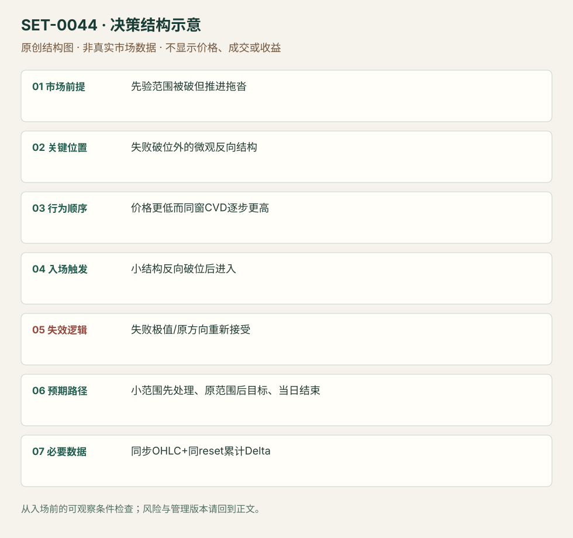

价格破位而累计 Delta 背离的反转
Cumulative-delta Divergence Failed-break Reversal · SET-0044 · reviewed · v1.0.0
盈利证据：not_established。审查范围与来源版本见第13节；未知字段保留缺失原因。
1. 名称与快速概览
价格突破下方范围但累计主动成交差额没有同向变弱，反而逐步抬高；等待价格小结构反向破位，交易失败的卖出方向。背离只提高警觉，不能提前当反转入口。
记录口径：PA supporting；必要数据 OHLC、cumulative_delta、trade_classification。名称性质：编辑性描述名，英文保留来源术语以便检索。reviewed 只表示本条规则与证据记录审查通过，盈利状态为 not_established。
2. 本质与行为假说
主动买卖差额与价格响应不一致说明单看价格下破可能不足。CVD不会直接揭示持仓净增减；累计重置、成交归类和场所覆盖都影响背离。
3. 适用市场与环境
来源DAX看似明确下破但拖沓，CVD上行；适合先验范围和可辨认背离。强新闻趋势里CVD可长期背离，不能逆向硬顶。
来源实用市场：DAX期货。
Session：来源DAX日内，CVD reset时点和图时区未明；复盘必须补参数且在计划session末平仓。
跨市场：本版不主张已经验证的跨市场迁移；更换市场必须重定数据来源、流动性与session。
4. 出现前的观察清单
保存既有范围边、下破触发及CVD重置定义，比较背离是否跨相同时窗；标反向小结构、失败极值和首目标。
5. 形成过程与状态转换
旧范围下破 → 期待卖出持续但实际拖沓 → CVD上行/抬高低点 → 价格压缩成小下降楔形 → 上破恢复 → 空方可能退出。
6. Entry trigger 与执行方式
原例在楔形向上破进入，而非第一次Delta变正。采用价格确认后才触发；如需棒收盘或越高缓冲，标编辑版本。
7. Invalidation 与止损逻辑
反向结构形成后的低点外；再被接受在失败低点下或价格/CVD恢复同向卖出则否认。CVD继续涨不能豁免价格止损。
8. Exit、target 与 trade management
先处理局部1分钟范围，后看原大范围相反边；过程买入衰弱则退出。本库不把整日最终高当必达目标。session结束平。
9. 常见 variations
上破而CVD走弱对称；单棒Delta反转是另一个测度，不能自动等效累计背离；没有背离的价格楔形归0007。
10. 失败方式与不交易条件
背离来自不同reset/漏交易；过早反向；趋势继续时不断买；用全日最后CVD重建早期方向；技术范围事后确定。
11. 与相近 setups 的区别
12. 图表与案例解读
已看DAX价格/CVD同屏，清楚区分背离期与后来的向上触发。静态图不能核查数据商分类和每笔速度。
- [VIS-000047] Cumulative Volume Delta DAX Trade - Step 2 - false break to the downside with a squeeze to the upside；定位：DAX delta rising / entry on wedge break。上部价格走低与下方CVD蓝箭头上行同屏；楔形上破后才是作者入口。 验证：chart_viewed。

本地原创示意（VIS-000101，非真实市场数据）：

小屏阅读可打开原尺寸示意图并缩放。

此图用于对照识别顺序与风险定义；不计入真实案例覆盖率。
视觉材料元数据与查看范围
- VIS-000047 · real_source_chart / structure_and_trigger / chart_viewed
品种：DAX期货；日期：未知/不适用；周期：未知/不适用；时区：未知/不适用
日期未在图中核对；周期未在图中核对；时区未在图中核对；来源图表不是成交审计 - VIS-000101 · synthetic_structure_diagram / illustration_only / generated_not_market_evidence
品种：未知/不适用；日期：未知/不适用；周期：未知/不适用；时区：未知/不适用
无真实品种、日期或价格：这是结构示意
13. 证据、分歧与未知项
完整CVD交易由Axia单家族，ATAS只说明工具差异，核心独立佐证有限。原文个别段落把吸收者角色写混；本条只保留可读价格与主动成交关系。
- [EVD-000088] Axia Futures，《Volume Delta Reversal Trade Strategy》，SRC-0031；定位：DAX low break / delta rising / wedge break entry。支持：技术向下破位看似合理，但累计Delta逐步升高/低点抬高；等楔形向上破入，先看小范围和原范围边。
- [EVD-000089] Danil Solovyov，《Imbalance – what is it? How to trade imbalance.》，SRC-0035；定位：Delta versus imbalance context。支持：单棒Delta和对角失衡可与价格不同，分类与背景重要；不独立验证累计背离精确规则。
审查边界：来源份数与独立核心核验分开；当前类别为 independent_context_only。正文中的概念、官方事实、衍生解说或同族资料只按其支持范围使用。
14. 可用于复盘的检查表
- ☐ 下单前的前提可核对：先验范围被破但推进拖沓
- ☐ 事前标记位置：失败破位外的微观反向结构
- ☐ 行为按顺序出现：价格更低而同窗CVD逐步更高
- ☐ 实际触发符合选定版本：小结构反向破位后进入
- ☐ 事先写明本次否定条件：失败极值/原方向重新接受
- ☐ 目标/路径只用当时已知信息：小范围先处理、原范围后目标、当日结束
- ☐ 数据满足 同步OHLC+同reset累计Delta；记录时间、点差、滑点、队列和未成交
- ☐ 记录截止平仓及规则偏离；正常亏损不事后改成“未成立”
15. 后续验证问题
跨交易所/供应商CVD是否给同结论？价格确认过滤贡献多少？背离强度与延迟怎样权衡？
双向相关导航
- SET-0003 关键位置吸收后的反转 0003 看局部大量卖成交不再压价，本条须累计流与价格的多段方向背离。
- SET-0007 三推高潮后的反转 0007 价格三推就可构成，本条楔形仅触发层，累计背离不可删除。